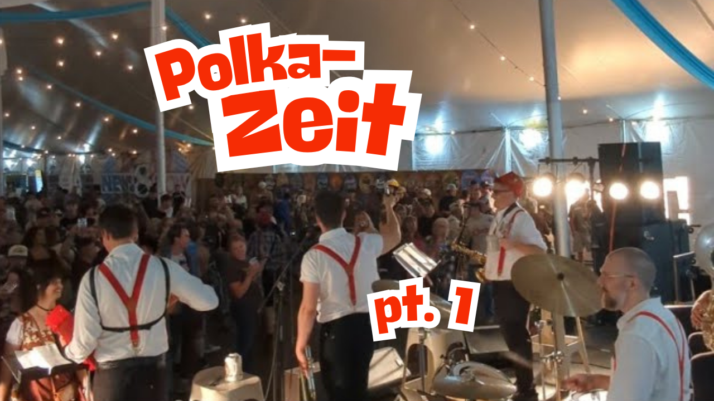
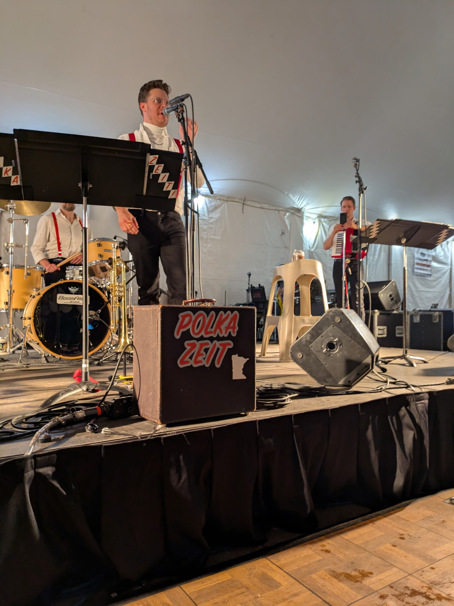
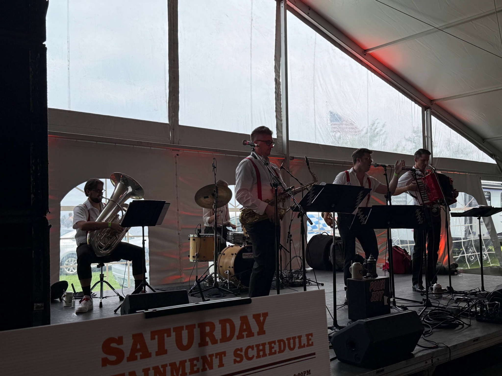

TURN IT UP
WATCH POLKA-ZEIT.
A little taste of the party, straight from the stage.

LIVE PERFORMANCE
POLKA-ZEIT PARTY!
Watch the band's live performances on YouTube. Video links can be added here as soon as they're provided.
Send the three YouTube video URLs to replace this preview with playable videos.

